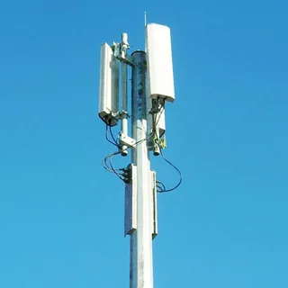

Общая инфармация
"WINDSOUL" - это команда профисионалов занимающиеся, проектированием и монтажом опор связи.
Услуги
"WINDSOUL" благодаря своему профессиональному подходу способна предоставлять широкий спектр телекоммуникационных услуг: обеспечение сплошного покрытия телекоммуникационной инфраструктурой определенных территорий, энергоснабжения данных структур, круглосуточного контроля за оборудованием связи, а также подключение оборудования операторов мобильной связи к волоконно-оптическим сетям.
Опора двойного назначения 39 метров.
Опора двойного назначения - это модернизированный объект городской среды, оснащенный самым современным оборудованием мобильной связи всех типов: 2G, 3G, 4G и новейшего 5G.
Также ОДН используется для увеличения уровня безопасности за счет простой установки камер видеонаблюдения. Компания предоставляет 39 метровые опоры для размещения оборудования связи.
Преимущества:
- Стабильный высококачественный сигнал в городах.
- Для меньшего загромождения улиц дополнительными постройками используется существующая городская инфраструктура.
- Единое решение для всех операторов связи.
- Возможность установки 5G!
- установка опор на малом участке земли, при плотной застройке в городской черте, возможность размещения до трех операторов
- возможность монтажа на любом типе фундамента и в любой климатической зоне!
- долговечность опоры: срок эксплуатации опоры не менее 20 лет!

"WINDSOUL" предоставляет оператором уже полностью готовую к использованию инфраструктуру.
Данные антенно-мачтовые сооружения возводятся за счет собственных средств компании и предназначены для использования сразу несколькими операторами.
Компания предлагает современные высокоэффективные решения, реализует инновационные проекты по оптимизации использования городского пространства в условиях плотной застройки.
строит компактные и малогабаритные опоры, учитывая целостность архитектурных ансамблей и исторических центров, «WINDSOUL»строит компактные и малогабаритные опоры, обеспечивая единство объектов культурного наследия и высоких технологий!
омпания обладает высокими компетенциями, опытом и знаниями специфики работы с электросетевыми комплексами и дорожными магистралями.